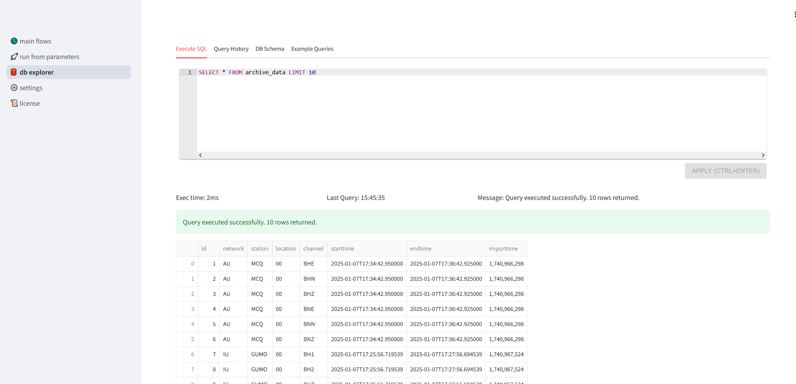
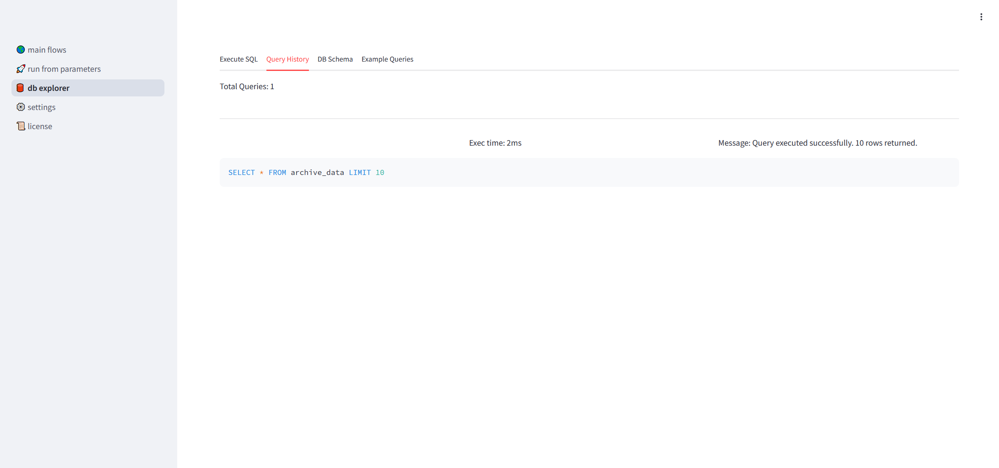
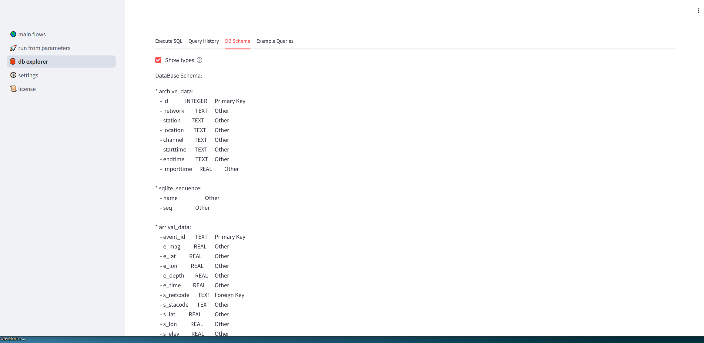
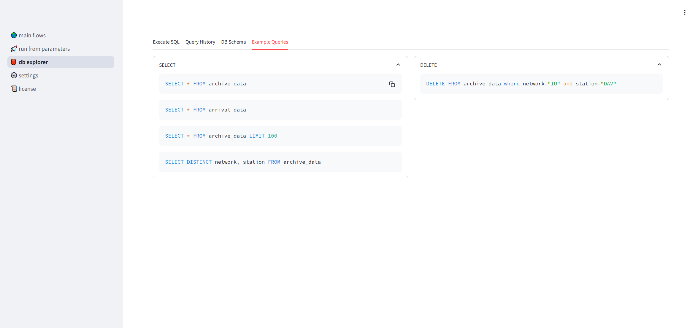

Database Explorer
Execute SQL Tab
If you have the “Execute SQL” tab selected, you see a text window from which you can enter in SQL commands to query the local database.
After you have entered your SQL query you hit the red “Apply” button and the results can be seen in a table underneath the text window.
If the query was successfully executed then a green banner will be displayed. If there is a syntax error in the query, for example, a red banner will be displayed describing the error.
SQL Reference
Query History Tab
If you have the “Query History” tab selected you will see a list of past SQL queries.
To copy a command move your mouse pointer to the command, then across to the far right and click on the copy icon. This will copy the command to the clipboard when can then be pasted into the “SQL Reference” tab.
DB Schema Tab
This tab displays the database tables used by seed-vault.
The ‘archive_data’ table stores metadata concerning where groups of events occurred.
network - FDSN network code
station - FDSN station code
location - FDSN location code
channel - FDSN channel code
starttime - start time (ISO 8601)
endtime - end time (ISO 8601)
importtime - database insertion time (UNIX integer timestamp)
The ‘arrival_data’ table stores seismic event data.
resource_id - FDSN unique identifier for the seismic event
e_mag - event magnitude (Moment Magnitude)
e_lat - event latitude (degrees)
e_long - event longitude (degrees)
e_depth - event depth (kilometres)
e_time - event timestamp (UNIX integer timestamp)
s_netcode - FDSN network code
s_stacode - FDSN station code
s_lat - station latitude (degrees)
s_long - station longitude (degrees)
s_elev - station elevation (kilometres)
s_start - station start time (ISO 8601)
s_end - station end time (ISO 8601)
dist_deg - distance from event to station (degrees)
dist_km - distance from event to station (kilometers)
azimuth - azimuth angle from event to station (degrees)
p_arrival - P wave arrival time (UNIX float timestamp)
s_arrival - S wave arrival time (UNIX float timestamp)
model - name of seismic velocity model
importtime - database insertion time (UNIX integer timestamp)
Example Queries Tab
Here we have example queries that can be copied to the clipboard for use in the “Execute SQL” tab.
To copy a command move your mouse pointer to the command, then across to the far right and click on the copy icon. This will copy the command to the clipboard when can then be pasted into the “SQL Reference” tab.